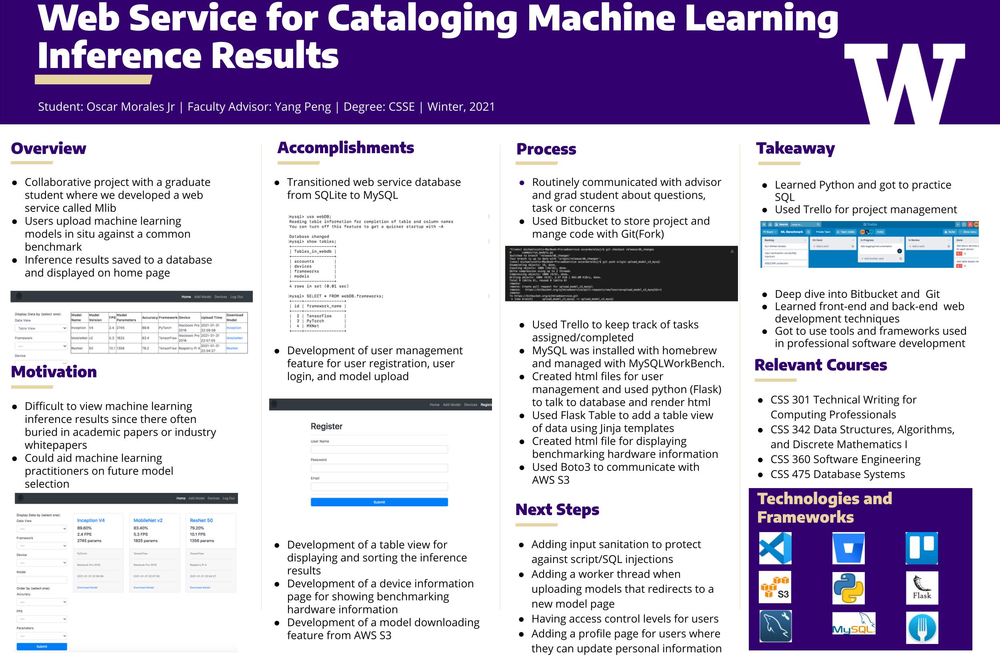

Division of Computing & Software Systems
March 19, 2021
Oscar Morales
Web Service for Cataloginh Machine Learning Inference Results
UWB CSS Faculty Research
Advisor: Dr. Yang Peng
Abstract

View full-sized poster